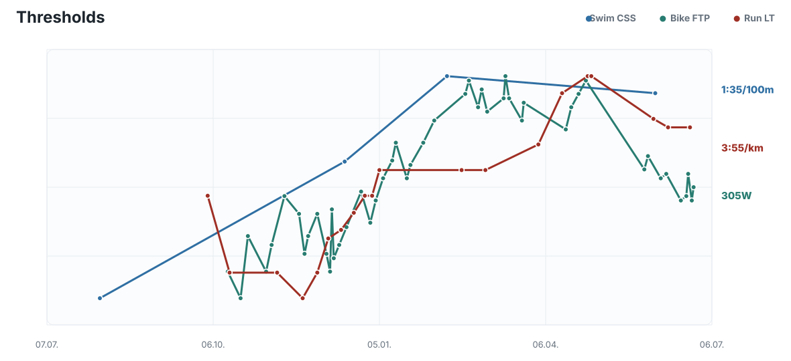
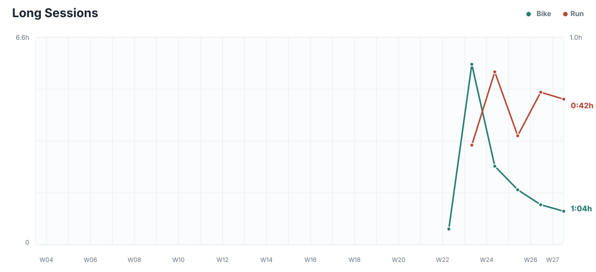
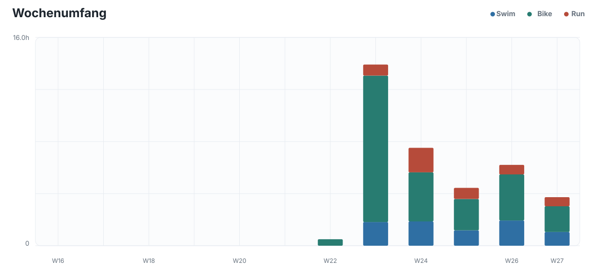
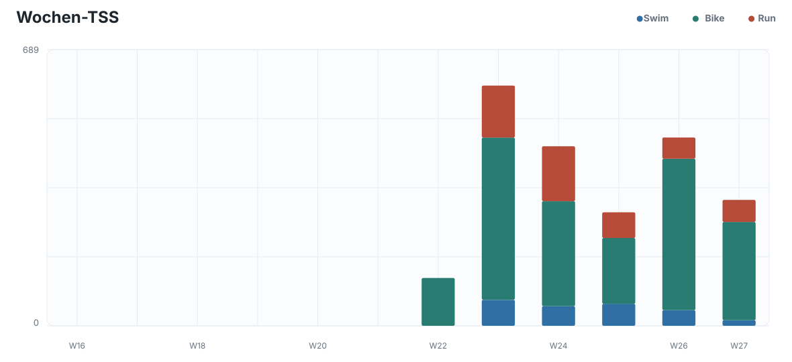
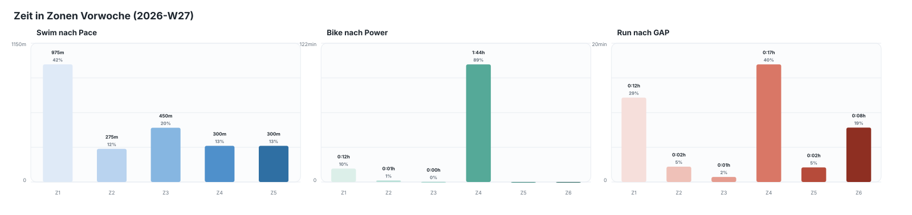
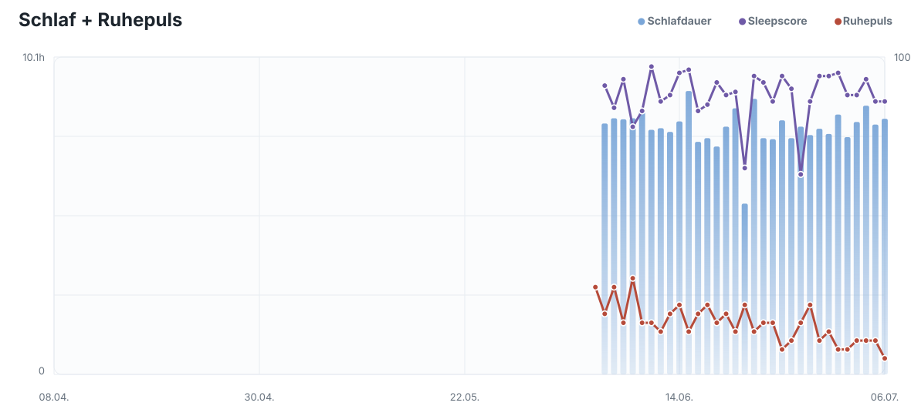
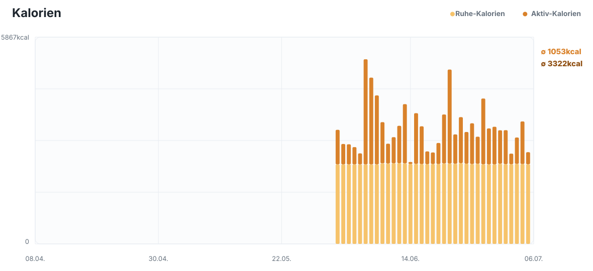

Mo 2026-07-06
Threshold
- 5min @203W
- 4x12min @305W,4min @100W
- 2min @100W
2026-07-06 bis 2026-07-12
45min @5:00/km
1:25h @5:00/km
75min @200W
W27 war die zweite Hälfte des geplanten MIT-Blocks und wurde insgesamt sehr konsequent umgesetzt. Der zentrale Trainingsreiz lag erneut auf kontrollierter Schwellenarbeit, vor allem auf dem Rad: 3x18min und 2x25min wurden jeweils stabil um 299W gefahren, mit sehr niedriger bis moderater Herzfrequenz und ohne sichtbaren Leistungseinbruch. Gegenüber dem ursprünglichen Plan wurde der Bike-Teil sogar leicht verschärft, was in diesem Fall trainingslogisch vertretbar war, weil die Ausführung sauber blieb und die Readiness nicht negativ reagierte. Der Lauf am 2026-06-30 war ebenfalls ein starker Reiz, lag aber in den schnellen Abschnitten wieder teils deutlich schneller als die nominelle Vorgabe und damit näher an oberem Threshold bis VO2max. Das ist als einzelner Qualitätsreiz wirksam, sollte aber nach zwei MIT-Wochen nicht in einen dritten harten Laufblock verlängert werden.
Das Schwimmen war mit 2300m und durchschnittlich 1:46/100m solide, aber nicht der Hauptreiz der Woche. Die Zone-Verteilung zeigt weiter, dass die CSS-basierten Vorgaben im Trainingsalltag eher ambitioniert bleiben und Schwimmen aktuell eher über saubere Wiederholbarkeit als über forcierte Pace gesteuert werden sollte. Ab 2026-07-02 wurde kein strukturiertes Triathlontraining mehr gemacht, aber mehrere Canyoning-Zustiege und Rückwege erzeugten zusätzliche Outdoor-Belastung. Besonders der Zustieg am 2026-07-04 war mit 1:34h und 17.517 Schritten am Tag relevant für Alltags- und muskuläre Belastung, auch wenn der Triathlon-spezifische Load gering blieb.
Die Health- und Load-Werte sprechen insgesamt für gute Verarbeitung der zwei MIT-Wochen. Am Ende von W27 am 2026-07-05 lagen ATL 50, CTL 55, TSB +5 und ACR 0.915 vor; am Morgen des Folgetags wurden HRV 107ms, 7-Tage-HRV 112ms im Korridor, Ruhepuls 35bpm und 8:08h Schlaf bei Sleepscore 86 gemessen. Das ist keine Warnlage, sondern ein ausreichend frischer Ausgangspunkt für W28. Gleichzeitig wäre ein weiterer reiner Threshold-Block nicht die beste Wahl, weil die letzten zwei Wochen bereits ausreichend spezifische Schwellenzeit geliefert haben und die nächsten Ziele eine breitere Abdeckung brauchen. Für Waldenburg am 2026-07-19 ist etwas Kurzdistanz-spezifische Schärfe sinnvoll, aber mit Nizza, Sharm El-Sheikh und dem langfristigen Ironman-Ziel darf die Long-Struktur nicht zu lange fehlen. W28 sollte deshalb vom reinen MIT-Block zurück zu einer gemischten Woche führen: ein Bike-Intervall am Montag, Dienstag komplett frei, Donnerstag Schwimmen, dazu kontrollierte Ausdauerarbeit und ein maßvoller Long Run oder Long Bike, ohne die Woche mit zu vielen harten Reizen zu überladen.












